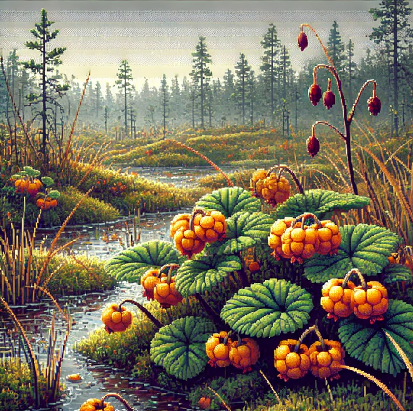
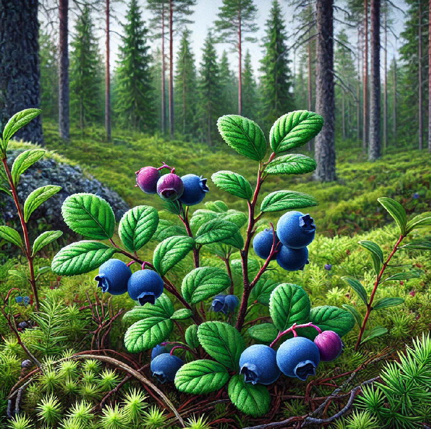
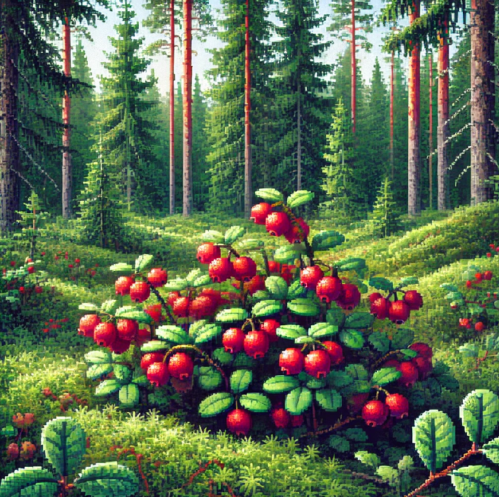
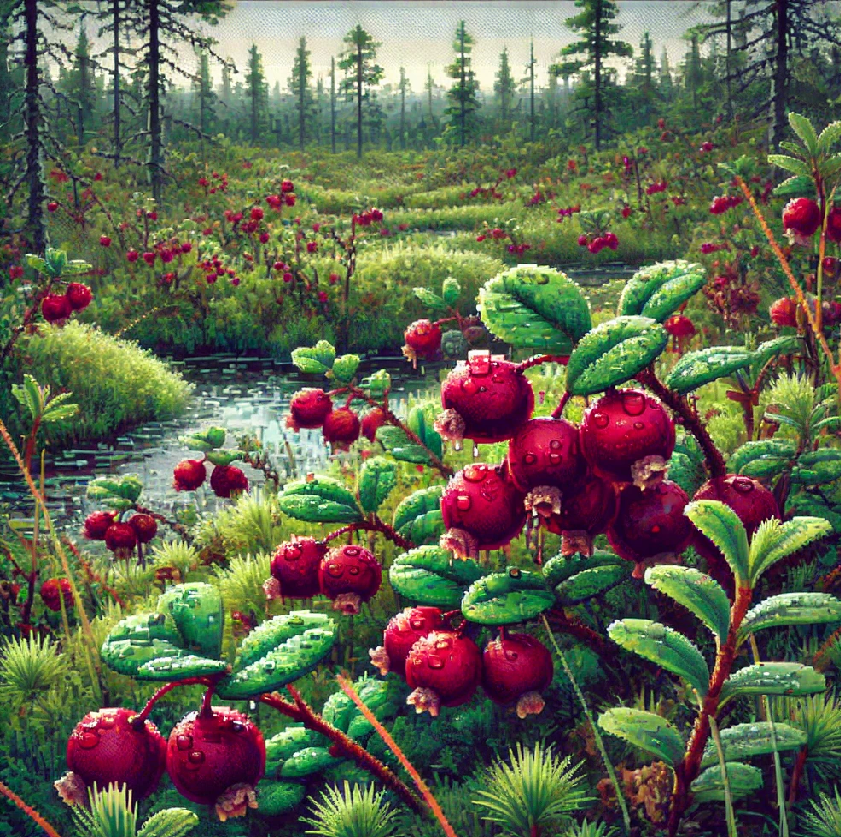

 |
МорошкаМорошка в Карелии встречается исключительно на болотах, поспевает в конце июня – начале июля, это многолетнее растение высотой до 10 см, ягоды ярко-оранжевого цвета, сочные, медовые на вкус. Благодаря большому количеству полезных веществ (витамины А, В1, В2, С, РР, калия, фосфора, магния, кальция и натрия) морошку используют как в народной, так и в традиционной медицине, в косметологии и кулинарии. |
|  |
ЧерникаЧерника в Карелии встречается в хвойно-лиственных лесах на влажных почвах, поспевает в августе, это многолетнее растение высотой 10 – 30 см, ягоды фиолетовые, красят соком руки и язык. В чернике содержатся витамины А, С и РР, витамины группы В. Ягоды содержат органические кислоты, микро- и макроэлементы (марганец, магний, кальций), дубильные вещества, флавоноиды, танины, эфирное масло и спирты, фитонциды.Самое известное свойство черники – способность значительно улучшать зрение. |
|  |
БрусникаБрусника в Карелии встречается на солнечных горках или опушках по сухим и сырым хвойным и лиственным лесам, кустарникам, иногда на торфяных болотах, поспевает в конце августа. Это многолетнее вечнозеленое растение высотой до 10-15 см, ягоды буро-красные, блестящие, диаметром до 8 мм. Плоды брусники получили широкое распространение в кулинарии и медицине. В ягодах много микроэлементов и витаминов. Лечебные свойства брусники – это вяжущее, мочегонное, дезинфицирующее и желчегонной действие. Свойства брусники полезны при лечении суставного ревматизма, подагры, остеохандроза. |
|  |
КлюкваКлюква произрастает в основном на мелких болотах с обилием мхов и невысоких сосен. Цвет ягод пурпурно-красный, диаметр до 1 см, вкус – кисловатый, поспевает в середине сентября. Болотная клюква является природным антибиотиком, антисептиком, источником витамина С и хинной кислоты. А по содержанию кроветворных натуральных кислот и легко усваиваемых минералов «для сердца» она на порядок превосходит любые импортные фрукты. Используется в народной медицине как средство от цинги и авитаминоза, против жара и лихорадки, в качестве восстанавливающего силы продукта, а также широко используется в кулинарии. |